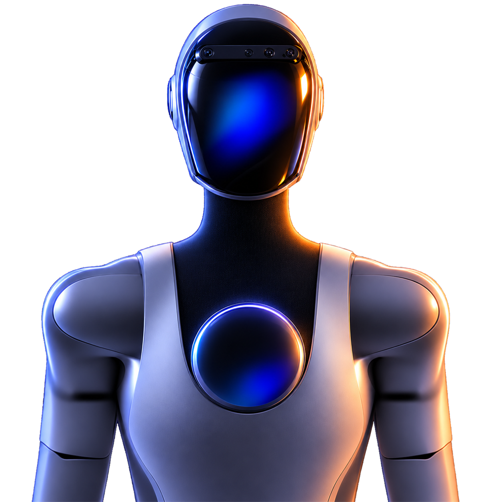

14 лет в IT
Сопровождение бизнес-критичных приложений, разбор инцидентов по логам и SQL, поиск первопричин. Чтобы системы работали, а пользователи о них не думали.
citibank · application manager
Портфель из 7 банковских приложений и хранилищ на MS SQL, интеграции со СМЭВ — обмен с ФНС и ФССП. Путь от инженера поддержки до владельца систем.
ai и автоматизация
Использую AI, чтобы убирать рутину из поддержки, и делаю сайты для малого бизнеса.

RTСергей Саламатов
Application Support · Application Manager · Тюмень, удалённо
Что я умею делать?
банк и госинтеграции
Отвечал за 7 приложений и хранилища данных на MS SQL в Citibank, включая интеграции со СМЭВ. Ежедневно контролировал доступность, производительность и место на серверах. В проекте локализации банка — миграция и восстановление работоспособности всех 7 приложений.
14 лет в IT, последние четыре года — в Citibank: прошёл путь от инженера технической поддержки до Application Manager.
Искал первопричины инцидентов и настроил мониторинг критичных приложений на MS SQL — инцидентов стало на 30% меньше за год. Писал планы восстановления, координировал ежегодные тесты COB, закрывал требования ИБ и замечания аудитов без просрочек.
До банка — поддержка корпоративных клиентов Европы и Азии на английском в NetWrix и старший смены из 10–15 инженеров в Шлюмберже.
надёжность и риски
Application Recovery Plan, тесты непрерывности бизнеса, Checkmarx и Black Duck, патчи, ревью с офицером ИБ. Планы замены устаревших компонентов (EOL/EOVS) и исключения по рискам под контролем сроков.
люди и процессы
Координирую бизнес, разработку, инфраструктуру и поставщиков при инцидентах и изменениях. Планирую обновления и UAT, обучаю первую линию. Английский C2, ITIL Foundation.
Опыт
2012 — 2026 · банк, международный IT, внедрения
Citibank
Application Manager · Москва
- Портфель из 7 приложений и хранилищ на MS SQL, интеграции со СМЭВ (ФНС, ФССП)
- Планы восстановления и ежегодные тесты COB, требования ИБ без просрочек
- Реестр приложений, сопровождение на внутренних аудитах — все замечания закрыты в срок
Citibank
Инженер технической поддержки
- Инциденты в SimpleOne: диагностика, восстановление, эскалация
- Problem management и предотвращение повторяющихся сбоев
- Мониторинг критичных приложений: −30% инцидентов за год
NetWrix
Специалист техподдержки · клиенты Европы и Азии
- Поддержка на английском, AD, Exchange, SharePoint, SQL, Office 365, VMware
- В числе лучших специалистов по оценкам клиентов
Шлюмберже
Специалист техподдержки · старший смены
- Remedy и ServiceNow, поддержка на русском и английском
- С 2018 — старший смены из 10–15 инженеров, обучение новичков
«Арсенал Плюс», «Мастер»
Инженер
- Внедрение ИС и модернизация инфраструктуры заказчиков, в т.ч. «Транснефть-Сибирь»
- Серверы, СХД, Windows Server, Exchange, миграция пользователей в новый домен
MS SQL
Problem Mgmt
ФНС · ФССП
Foundation
SimpleOne · Jira
C2
Нужна
поддержка?
Ищу роль Application Support или Application Manager. Открыт к проектам по автоматизации и созданию сайтов. Работаю из Тюмени удалённо, разница с Москвой 2 часа.